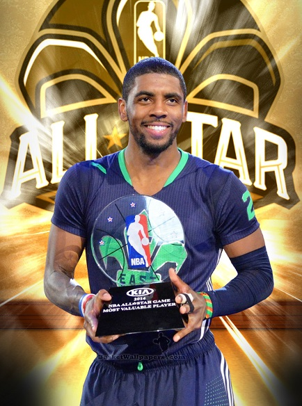
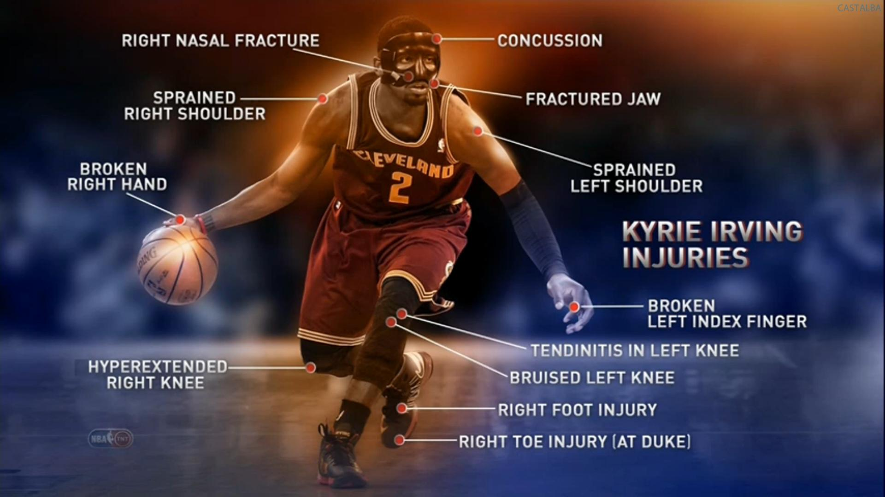
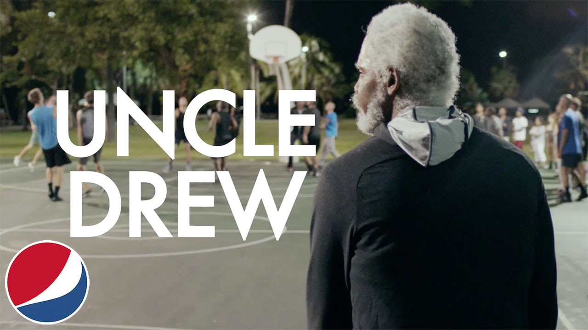

Info

Kyrie Irving Andrew( Eng. The Kyrie to Andrew of Irving ; on March 23 1992 , Melbourne , Victoria , Australia ) - Australian and American professional basketball player who currently plays for the team NBA " Cleveland Cavaliers " After a year spent in Duke University , Irving has been selected under the first number in the NBA draft in 2011 , "the Cleveland Cavaliers' team. In his debut season in the "Cavs' Irving, gaining 18.5 points and 5.4 transmission per game, he was voted rookie of the year . During his stay in the NBA Kairi thrice participated in the all-NBA , where in 2014 received the title of most valuable player and was a member of the third team all-star . At the international level, Irving advocated basketball Team USA , as part of which became the world champion, and was named the most valuable player of the 2014 World Cup .
Statistics
|
2016 - 17 SEASON CAREER STATS |
MPG | FG% | 3P% | FT% | PPG | RPG | APG | BPG |
| 35.2 | 46.7 | 39.3 | 89.9 | 24.3 | 3.2 | 5.9 | 0.2 | |
| 34.1 | 45.5 | 38 | 86.9 | 21.2 | 3.4 | 5.5 | 0.3 |
HEIGHT 6 ft3 in
/ 1.9m
WEIGHT
193 lbs
/ 87.5kg
BORN
03/23/1992
AGE
24 years
FROM
Duke
NBA DEBUT
2011
YEARS IN NBA
5
PREVIOUSLY
CLE 2011-17

Other side

Cleveland Cavaliers superstar Kyrie Irving is hoping for a big screen slam dunk. Sources tell Variety that Temple Hill Entertainment has acquired the feature film rights to Irving’s “Uncle Drew” Pepsi commercials. “Skiptrace” scribe Jay Longino is set to write the script and Irving is attached to reprise the role of Drew. Temple Hill’s Marty Bowen, Wyck Godfrey, and John Fischer will produce the film, described as a love letter to basketball. The original Pepsi Max advertisements showed Irving, in full make-up, playing a 70-plus-year-old man, Drew, who would show up to pick-up basketball games and school kids half his age, while also reminiscing about how the game used to be played. Fischer was a big fan of the online shorts and showed them to Bowen thinking they could possibly turn it into a movie. But it was Longino’s pitch that really got them excited about pursuing the rights for a feature film. “Marty and I had recently sold a pitch to Fox 2000, so he and John reached out and asked if I was interested in bringing them a take,” Longino told Variety. “Looking back, I think I tried to play it cool with them on the phone and told them that I’d think about it. But the truth is, I was pretty fired up. As both a former player and a die-hard fan, this truly is a dream project for me.” in a tournament and goes on a road trip to round the old squad up to play.